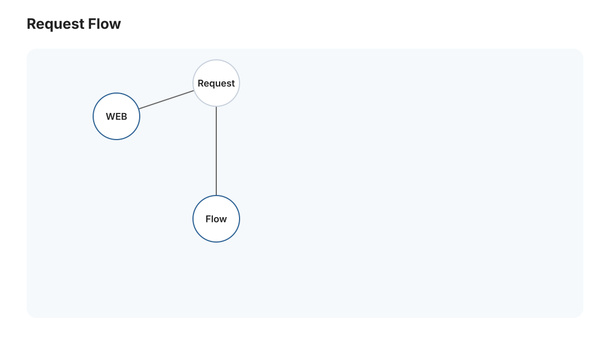
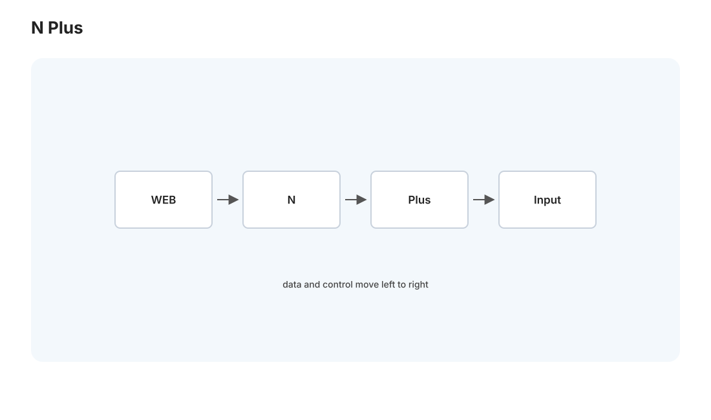
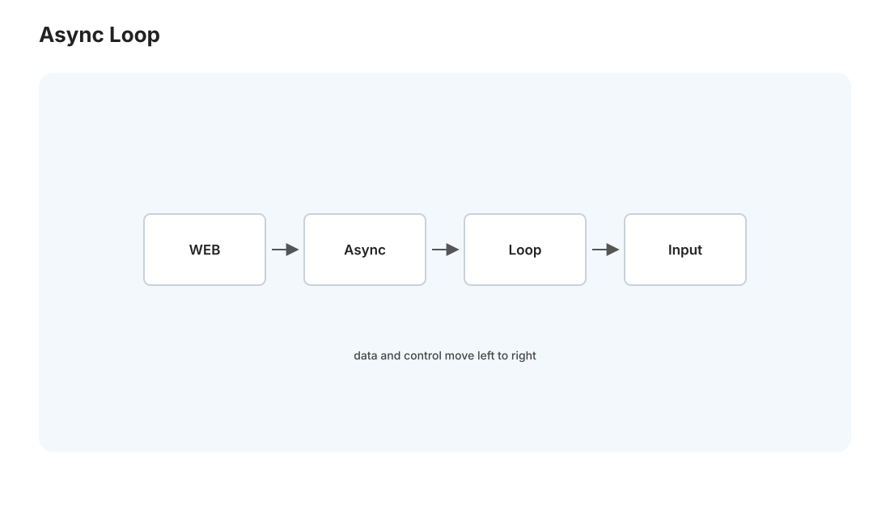

本页目录
全栈 II · 后端工程
对标：Berkeley CS169 / FastAPI 文档 / DDIA（数据视角）｜ 前置：web-01、db 线、os-02（并发）、net-02（HTTP） 深入 web-01 那条链里的应用服务器层——后端。以你的 FastAPI（Medusa）为标本，讲清后端的核心构件：路由与请求处理、ORM 与数据库交互（及其经典陷阱）、异步/并发模型（为什么现代后端爱 async）、认证授权、错误处理与日志。这是把"能跑的后端"写成"可靠的后端"的工程知识。
1. 后端的骨架：路由 → 处理 → 响应

后端服务器的核心循环：接收 HTTP 请求 → 路由到对应处理函数 → 执行业务逻辑（常含数据库）→ 返回响应。FastAPI 里：
- 路由：@app.get("/articles/{id}") 把 URL 模式绑到函数，路径参数/查询参数/请求体自动解析。
- 数据校验：FastAPI 用 Pydantic 声明式校验 + 类型转换——请求进来先按 schema 验证（🔗 pl 线类型即契约在 Web 的实用形态），不合法自动返回 422。"在边界处校验输入"是后端可靠性的第一道防线（也是 sec 线的第一道：永远不信任客户端输入）。
- 中间件：横切关注点（认证、日志、CORS、限流）放在请求处理前后统一处理——别在每个处理函数里重复。
2. ORM 与数据库交互:方便背后的陷阱

后端大量工作是与数据库对话。ORM（对象关系映射，如 SQLAlchemy）把数据库行映射成对象、让你用代码而非 SQL 操作——方便，但有必须懂的陷阱：
- N+1 查询问题（后端头号性能杀手）：取一个列表（1 次查询），然后循环里对每个元素访问关联对象（各触发 1 次查询）= N+1 次查询。解法：预加载（eager load / JOIN）一次取全（🔗 db-02 的 JOIN）。ORM 让 N+1 极易不小心写出——你以为一行代码，其实发了几百次查询。Medusa 若用 ORM 取"文章 + 其事件"要特别当心。
- ORM 隐藏了 SQL 成本：一个属性访问可能是一次数据库往返——要知道每行代码背后的查询（开 SQL 日志看真相）。复杂查询有时直接写 SQL 更清楚更快。
- 连接池：每次查询新建数据库连接很贵（TCP + 认证）——用连接池复用（Medusa 的 tailscale 只读直连也应走池）。池大小要调（太小排队、太大压垮数据库）。
方法论：ORM 是便利层，不是 SQL 的替代品——你必须能看穿它生成的 SQL（db-02 的 EXPLAIN），否则性能问题无从查起。"懂 ORM 底下的 SQL"是后端工程师和调包侠的分水岭。
3. 异步与并发：现代后端为什么爱 async

后端大量时间在等待——等数据库、等外部 API（Medusa 等 DeepSeek）、等磁盘。这是 I/O 密集（不是 CPU 密集）。两种应对模型（🔗 os-01 进程/线程、par 线）：
- 线程/进程池（传统）：每请求一个线程，等 I/O 时线程阻塞、OS 切换到别的线程（os-01）。简单，但线程有开销（内存 + 上下文切换 csapp-03），高并发时线程爆炸。
- 异步事件循环（async/await，现代）：单线程 + 事件循环——遇到 I/O 就挂起当前任务（
await）、去处理别的任务，I/O 完成再回来。一个线程高效处理成千上万个并发连接（因为大部分时间在等，不占 CPU）。FastAPI/Node.js/Nginx 都是这个模型。
关键认知：async 擅长 I/O 密集（大量等待），不加速 CPU 密集（CPU 满载时事件循环也堵）。Medusa 后端查数据库、调 LLM API 都是 I/O 密集——async 是对的选择；但若有重计算（如本地跑 embedding）要丢给线程池/进程池，别堵住事件循环。"async 处理等待、多进程处理计算"是后端并发的分工原则。
4. 认证、授权与会话
- 认证（Authentication）：你是谁？——密码（存加盐哈希 bcrypt/argon2，绝不明文，🔗 crypto-01/sec-02）、OAuth（第三方登录）、API key。
- 授权（Authorization）：你能做什么？——基于角色（RBAC）/ 资源所有权检查。认证和授权是两件事，别混（登录了 ≠ 有权访问这条数据）。
- 会话维持（web-01 的状态）：服务端 session（session id 存 cookie、数据存服务端）vs JWT（自包含 token，服务端无状态但难撤销）——取舍见 sec-02。cookie 要设
HttpOnly+Secure+SameSite（🔗 sec 线防 XSS 窃取和 CSRF）。
5. 错误处理、日志与可观测性
生产后端的成熟度体现在出错时的表现： - 错误处理：区分"预期错误"（用户输入非法 → 4xx + 清晰信息）和"意外错误"（bug/依赖挂 → 5xx + 别泄露内部细节给用户，但内部记全栈）。别让异常裸奔到用户（暴露堆栈 = 信息泄露 sec 线）。 - 结构化日志：日志是排查生产问题的眼睛——记请求 id、关键路径、错误上下文。Medusa 24/7 跑，日志是你唯一的现场（memory 里提到的"RSS 断供 3 天静默失败"正是缺乏告警/可观测的教训）。 - 可观测性三支柱：日志（发生了什么）、指标（多少、多快——QPS/延迟/错误率）、追踪（一个请求跨服务的路径）。"你无法优化/修复你看不见的东西"——这是后端运维的第一原则（cloud-02 深入）。
6. 练习与要点
例 1（抓 N+1） 写一段"取文章列表再循环取每篇的标签"的 ORM 代码，开 SQL 日志数查询次数，然后改成 JOIN 预加载——亲眼看 N+1 从几百次查询降到 1 次。后端最高频的性能修复。
例 2（async 判断） 判断三个后端任务（查数据库、调 LLM API、本地跑 embedding）哪些适合 async、哪个要丢进程池——把"async 治 I/O、进程治 CPU"用到 Medusa。
例 3（错误分层） 给"用户请求不存在的文章"和"数据库连接断了"设计不同的错误响应（404 vs 503，用户看到什么、日志记什么）——练"预期错误 vs 意外错误"的分层处理。\(\blacksquare\)
▶ 关联实验 L12（极简 HTTP 服务器）：
labs/L12-http-server/已在 net-02 引入——从 socket 到 HTTP，是本页 FastAPI 底下那一层。理解了它，框架就不是黑盒。
下一页：全栈 III——浏览器与前端工程：那条链的另一端，React 怎么把数据变成界面、浏览器怎么渲染、前端性能与工程化（你的 Vite 构建正在此列）。